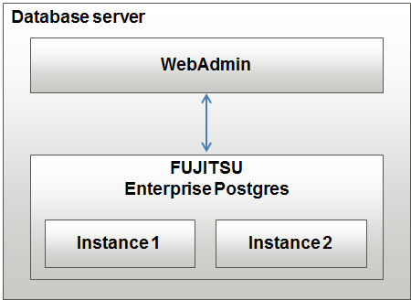

A single-server configuration enables you to create and operate instances on a single server. In this configuration, WebAdmin must be installed on the same database server as the FUJITSU Enterprise Postgres Server component.
Single-server configuration
